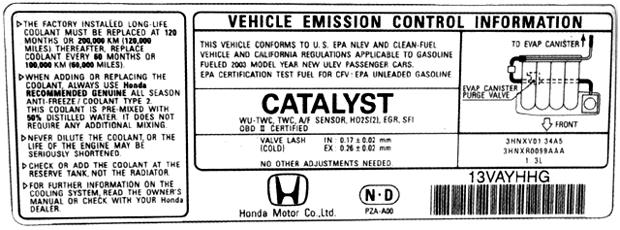

Greener Cars And Trucks
Before you buy a new car or truck, even perhaps a hybrid car, learn which ones are best for the environment and have the highest gas mileage.
October/November 2003
Issue # 200- October/November 2003
Before you hit the road, learn which cars get the green light.
By James Kliesch; Illustration by Tom Griffin
When buying your next vehicle, you can make a better choice for both your wallet and the planet, if you shop with greener options in mind. Within every type of car and truck, you'll find fuel-efficient compacts for the commute to work; mid-size wagons to haul groceries; minivans to transport the kids; even trucks or SUVs for off-road farm work. As the chart on Page 49 shows, some models in each category are more fuel-efficient (up to 68 miles per gallon!) and pollute less than others. Here's a rundown of how we define greener vehicles and which models are your current top options.
THE GREEN SCORE
To help consumers consider the environment in their car-buying decisions, the American Council for an Energy-Efficient Economy (ACEEE) annually publishes its Green Book, an environmental guide to cars and trucks (see MOTHER'S Bookshelf, Page 120). Every car, SUV, truck and van on the market gets a Green Score-an evaluation that encompasses the entire environmental impact of a vehicle. To determine this score, ACEEE uses "damage costs" associated with each pollutant. These estimates reflect the costs to society of illnesses and premature deaths associated with pollution. The Green Score is measured on a 0 to 100 scale-the higher the number, the better.
The list of vehicles on Page 49 identifies the top-scoring nationally available vehicles within 13 popular classes. In many cases, even greener models than those listed are available in limited areas of the country, typically California and New England. Today's best have Green Scores in the high 40s and 50s. Overall, the average Green Score for model year 2003 is 22. Within that, the average 2003 car scores 28, while the average truck gets an 18. Some classes offer multiple high scorers, whereas the top-ranked models in other categories, such as standard pick ups and large SUVs, are inferior to the majority of new vehicles on the road.
HOW CARS POLLUTE
Carefully consider fuel economy and tailpipe emissions as you shop for your next set of wheels-these two factors contribute most to a vehicle's environmental impact. When a vehicle is driven, pollutants billow from its tailpipe. Particulates, carbon monoxide, and smog-forming hydrocarbons and nitrogen oxides contribute to air pollution. Acid rain-inducing sulfur dioxide and the global-warming greenhouse gases-carbon dioxide, methane, and nitrous oxide-pour out too.
As a whole, the auto industry has made little progress with fuel economy in recent decades. For example, the current Ford fleet averages 22.6 mpg, while the original 1908 Model T achieved 25 mpg. That car was slower and had far fewer amenities than current vehicles, but these numbers illustrate that "improvements" to vehicle size, power and luxuries have come at the expense of fuel economy.
The current average mpg of passenger vehicles is at its lowest level since 1980, largely due to the proliferation of gas-guzzling SUVs and pickup trucks. Besides increasing our dependence on oil, this trend also increases global-warming emissions. Today, the average truck emits percent more global-warming pollution than the average car.
Determining a vehicle's fuel economy (the mpg ratings for city and highway driving) is easy-for new autos, check the window label; for used models, check the U.S. government's fuel economy Web site, www.fueleconomy.gov .
The Environmental Protection Agency requires all new vehicles sold in the United States to meet minimum emission thresholds for certain pollutants. Each vehicle receives one of many ratings that identifies its level of tailpipe emissions, or essentially how clean its exhaust is. For example, a car certified to the Low-Emission Vehicle (LEV) standard emits 70 percent less smog-forming hydrocarbons than a car meeting the minimum "Tier 1" emission standard. A car meeting the Ultra-Low-Emission Vehicle (ULEV) standard emits 84 percent fewer hydrocarbons than a Tier 1 car, and a car meeting the Super-Ultra Low-Emission Vehicle (SULEV) standard emits pollutants at near-zero levels.
The auto industry has made substantial progress in recent years on reducing tailpipe emissions. 2003 vehicles emit significantly fewer emissions than those even just a few years old. Pollution control has grown from an art into a science, as automotive engineers better understand how to limit emissions from forming inside an engine, and how to neutralize those that do form before they exit the tailpipe. Onboard computers now monitor tailpipe emissions and adjust on-the-fly to maintain performance and low-pollution levels.
But there's still plenty of room for improvement, particularly with larger vehicles-today's average truck emits 46 percent more smog-forming exhaust than the average car.
To learn the emissions certification for a new vehicle, first check the windows-some manufacturers use decals to tout low-emission certifications. If there's nothing there, just pop the hood; all vehicles have mandatory under-the-hood labels that identify their emission standards (see example, Page 48).
It should be noted that fuel economy and emission standards aren't necessarily intertwined. Emission standards are mea sured in terms of pollutants emitted per mile driven, not per gallon of fuel consumed. So, it's possible to have a poor fuel economy vehicle with fairly low tailpipe emissions. Or you could have a vehicle with high fuel economy and average exhaust pollution. Fuel consumption, on the other hand, is very closely related to greenhouse gas emissions-the more feel efficient your vehicle, the fewer greenhouse gases it wilt emit.
Energy consumed and emissions released during the manufacturing process also influence the greenness of a vehicle. A complex global supply chain makes it difficult to track the environmental aspects of raw materials and components, but the impact generally is proportional to vehicle weight-small cars have fewer manufacturing related impacts than bigger ones.
But this is only part of the picture. The fuel production cycle, from extracting crude oil to transporting refined gasoline, requires energy and produces emissions even before you fill your tank. The more fuel your vehicle uses, the greater its "upstream" pollution.
THE GREEN HORIZON
A significant improvement in tailpipe-emission regulations, collectively known as Tier 2, kicks in for model year 2004. These EPA standards, to be phased in between 2004 and 2009, will bring about major reductions in smog-forming emissions. The Tier 2 regulations are complex, but they offer automakers flexibility in meeting the standards. One of their cornerstones is that vehicles can meet a range of emission levels (called "bins"), as long as the manufacturer's average does not exceed a maximum level of pollutants per mile driven. Some companies, such as Ford, Honda, Saturn and Volvo, already have introduced. vehicles certified to the new standards. Green Scores for current Tier 2-compliant vehicles are not yet available, but new contenders for the top spots in each class are listed on Page 49.
In the last few years, the auto industry has introduced an unprecedented number of extremely clean gasoline vehicles capable of meeting the SULEV standard. These vehicles require a special blend of gasoline that has especially low levels of sulfur. The low-sulfur fuel is necessary to prevent damage to the vehicles' advanced catalytic converters. Currently this fuel, and the cars that use them, are only available in limited areas of the country, primarily California. But the federal government has mandated low-sulfur gasoline to be nationally available by mid-2006, so expect to see SULEV-certified models available coast-to-coast in the near future.
Another, perhaps bigger story from the auto industry is the introduction of hybrid-electric vehicles. These cars, which run on conventional gasoline but use onboard-generated electricity to supplement their power, achieve very high fuel economies and extremely low emissions.
Carefully consider exhaust pollution when car shopping. To learn about the emissions for any vehicle you are considering, pop the hood and look for a label such as this.
HYBRIDS 101
Hybrid-electric vehicles use an electric motor in conjunction with a gasoline engine to provide power. The concept has been around since the early 1900s, but it took modem technology to seamlessly integrate electronic and internal combustion components. Because hybrids supplement their power with an electric motor, they can use a smaller and more efficient internal combustion engine. Larger standard gas engines require more energy to pull their weight and overcome internal friction, leading to poorer fuel economy. And because engine friction is more severe with more revolutions per minute (rpm), engines are inherently less efficient in that range.
Automotive engineers realized that if they paired an electric motor with a small internal combustion engine, they could design a system with a smaller, more efficient engine that avoids inefficient, high-rpm driving. The electric motor replaces the torque lost from the engine substitution, providing the horsepower of a larger engine with the efficiency of a smaller one. Hybrids also use additional energy recovery features such as idle-off (automatic engine shut-off when at a complete stop) and regenerative braking (converting braking energy into electricity), which increase the energy savings even more. Functionally, hybrids drive just like conventional vehicles. The noticeable differences with hybrids are a quieter ride and, of course, fewer trips to the gas station.
Hybrids are a bit more expensive typically a few thousand dollars more than a comparable gasoline model. But some state and federal tax incentives can help offset this expense. For example, the IRS allows a one-time tax deduction of $2,000 for the purchase of a hybrid vehicle. A number of states also offer tax deductions and credits contact your state government or visit www.cleancarcampaign.org/hybridstate.shtml to learn what's available in your area.
Right now, only three hybrids are on the market: Honda's Insight and Civic Hybrid, and the Toyota Prius. In October, Toyota will release the 2004 Prius, a redesigned, larger and more efficient model than its predecessor, for the same sticker price (about $20,000). (For a firsthand account of buying and owning a hybrid, see "Better than Speed," Page52.-MOTHER)
Soon, your hybrid choices will greatly expand-10 of the next 12 hybrids announced for production are a pickup, minivan or SUV, including a hybrid version of the Ford Escape, which will hit showrooms in the latter half of 2004. Other hybrids slated for the next few years include Chevrolet's Silverado, Equinox, Malibu and Tahoe; Ford's Futura; GMC's Sierra and Yukon; Lexus' RX 400H; Saturn's VUE; and Toyota's Highlander and Sienna. More hybrids for consumers to choose from will increase competition, which should help lower prices. Consumer research firm J.D. Power and Associates forecasts that hybrid sales will reach a half-million annually by 2006.
Even if a hybrid vehicle is not feasible for you right now, greener choices exist in all segments of the market. Whether you're interested in a compact car or a pickup, certain models are better for the environment, without sacrificing the characteristics you crave. ACEEE suggests consumers purchase the most environmentally friendly vehicles that meet their needs and fit their budget. Making that choice benefits more than your wallet and immediate environment. It also sends a message to automakers that it is good business to sell clean, fuel-efficient cars and trucks. This should motivate greater investments in advanced automotive technologies and-best of all-lead to more green vehicles on the road.
James Kliesch is a Research Associate at the American Council for an Energy-Efficient Economy, and coauthor of ACEEE'sGreen Book: The Environmental Guide to Cars and Trucks (to order, see MOTHER'S Bookshelf, Page 120).
POLLUTION FROM A TYPICAL NEW CAR AND LIGHT TRUCK
Pollution a plenty: This shows the pounds of tall pipe and fuel-cycle emissions that a single vehicle emits per year, assuming 15,000 miles of driving. The average light truck pollutes 40 percent more than the average car. (The light truck classification includes pickups, SUVs and minivans.)
Diane Rader/ ACEEE
|
Diane Rader/ ACEEE Carefully consider exhaust pollution when car shopping. To learn about the emissions for any vehicle you are considering, pop the hood and look for a label such as this. |
 |
 |